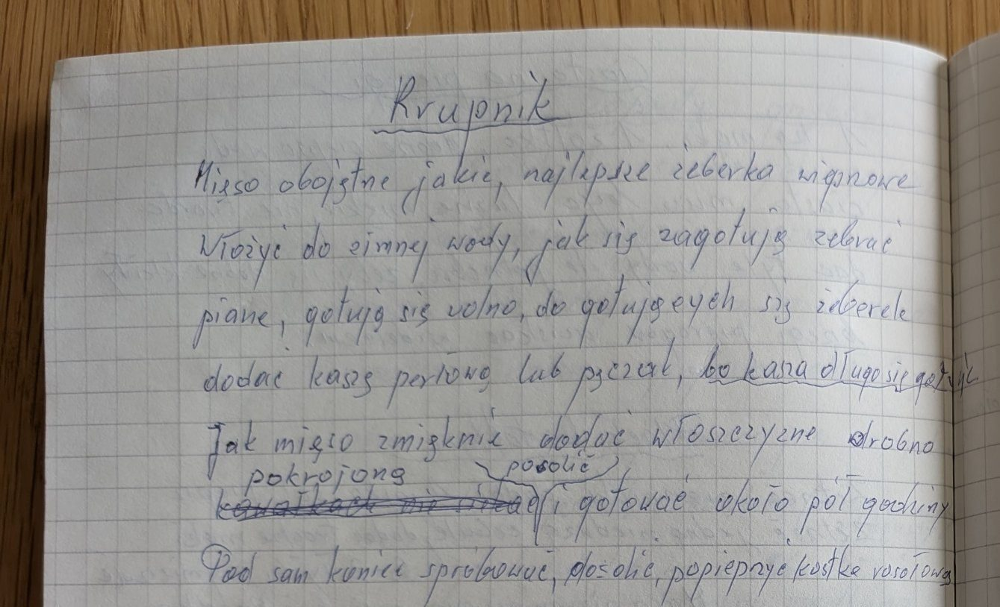

Krupnik


Składniki
- mięso (najlepiej żeberka wieprzowe)
- kasza perłowa lub pęczak
- włoszczyzna
- sól, pieprz
- kostka rosołowa
Przygotowanie
- Mięso włożyć do zimnej wody, po zagotowaniu zebrać pianę i gotować wolno.
- Do gotujących się żeberek dodać kaszę perłową lub pęczak (kasza długo się gotuje).
- Gdy mięso zmięknie, dodać drobno pokrojoną włoszczyznę, posolić i gotować około pół godziny.
- Pod sam koniec spróbować, dosolić, popieprzyć i dodać kostkę rosołową.
Oryginalny zapis
Krupnik
Mięso obojętne jakie, najlepsze żeberka wieprzowe
Włożyć do zimnej wody, jak się zagotuje zebrać
pianę, gotuje się wolno, do gotujących się żeberek
dodać kaszę perłową lub pęczak, bo kasza długo się gotuje.
Jak mięso zmięknie dodać włoszczyznę drobno
pokrojoną posolić
[skreślone] i gotować około pół godziny.
Pod sam koniec spróbować, dosolić, popieprzyć kostka rosołowa.